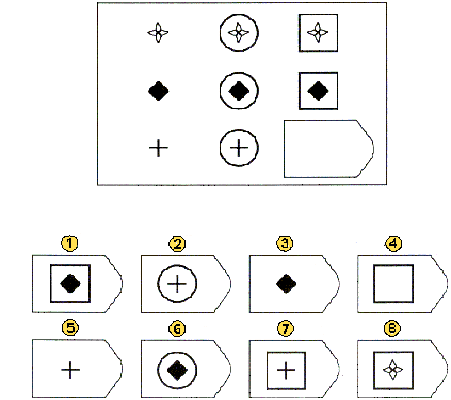
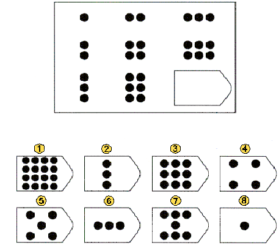

<!DOCTYPE html>
<html>
<head>
  <title>USYD Metacognition</title>
  <link rel="icon" type="image/x-icon" href="favicon.ico">

  <!-- Load jsPsych and jquery-->
  <script src="https://unpkg.com/jspsych@7.3.3"></script>
  <script src='https://cdnjs.cloudflare.com/ajax/libs/jquery/2.1.3/jquery.min.js'></script>
  <script src='https://cdnjs.cloudflare.com/ajax/libs/foundation/5.5.2/js/foundation.min.js'></script>
  <link href="https://unpkg.com/jspsych@7.2.3/css/jspsych.css" rel="stylesheet" type="text/css" />
  <link href="https://unpkg.com/jquery-ui-css@1.11.5/jquery-ui.css" rel="stylesheet" type="text/css" />


  <!-- Load jsPsych plugins-->
  <script src="https://unpkg.com/@jspsych/plugin-instructions@1.1.3"></script>
  <script src="https://unpkg.com/@jspsych/plugin-html-keyboard-response@1.0.0"></script>
  <script src="https://unpkg.com/@jspsych/plugin-html-button-response@1.0.0"></script>
  <script src="https://unpkg.com/@jspsych/plugin-image-keyboard-response@1.0.0"></script>
  <script src="https://unpkg.com/@jspsych/plugin-survey-text@1.0.0"></script>
  <script src="https://unpkg.com/@jspsych/plugin-external-html@1.0.0"></script>
  <script src="https://unpkg.com/@jspsych/plugin-external-html@1.0.0"></script>
  <script src="https://unpkg.com/@jspsych/plugin-preload@1.0.0"></script>
  <script src="https://unpkg.com/@jspsych/plugin-html-slider-response@1.1.2"></script>
  <script src="https://unpkg.com/@jspsych/plugin-browser-check@1.0.0"></script>
  <script src="https://unpkg.com/@jspsych/plugin-canvas-keyboard-response@1.1.2"></script>
  <script src="https://unpkg.com/@jspsych/plugin-call-function"></script>
  <script src="https://unpkg.com/@jspsych/plugin-fullscreen@1.2.0"></script>
  <script src="https://unpkg.com/@jspsych/plugin-survey-html-form@1.0.0"></script>
  <script src="https://unpkg.com/@jspsych/plugin-survey-likert@1.1.2"></script>
  <script src="https://unpkg.com/@jspsych-contrib/plugin-pipe"></script>
  <script src="https://unpkg.com/@jspsych/plugin-survey@1.0.1"></script>

  <!-- Load the global environment-->
  <script src="global-env.js"></script>
  <script src="info_sheets.js"></script>
  

  <!-- Some custom CSS-->
  <link href="custom-css.css" rel="stylesheet" type="text/css" />
  <link rel="stylesheet" href="https://unpkg.com/@jspsych/plugin-survey@1.0.1/css/survey.css">

</head>
<body></body>
<script>


//////////////////////////////////
//         Gloabl Settings      //
//////////////////////////////////

// Initalise jsPsych
  const jsPsych = initJsPsych({
   on_interaction_data_update: function(data) {
     if(data.event == 'fullscreenexit'){in_fullscreen = false}

   },
 on_finish: function(data) {
   if(aborted == true){alert("You must use Chrome or Firefox to complete this experiment.")}
    if(aborted == false) {  if(jsPsych.data.get().filter({trial_type: "Summary Trial"}).select('correct').mean() < 0.55){window.location = attention_redirect_link} else {window.location = redirect_link}}
   // jsPsych.data.get().localSave('csv','mydata.csv');
   }
})


// Settings (set these)

  const DataPipe_ID = "sqmTuhEHd0ow" // The DataPipe ID for where the data should be stored

  const sona_experiment_id = "NA"; // The SONA experiment ID 
  const sona_credit_token = "NA"; // The SONA credit token 
  const Prolific_redirect = "CHGWKNI0"; // The Prolific redirect link (to credit)
  const Prolific_failed_check = "C13PIUOF"; // The Prolific redirect link to NOT credit (manual review)
  const task_time = 12; // time in minutes for the PIS 


  var in_fullscreen = true;
  var trialnum = 1;
  var blocknum = 1;
  aborted = false;
  phase = null;


//////////////////////////////////


// Preload RPM images


  var preload = {
    type: jsPsychPreload,
    images: [
      'img/p1_rpm.gif',
      'img/p3_rpm.gif',
      'img/p5_rpm.gif',
      'img/p7_rpm.gif',
      'img/p9_rpm.gif',
      'img/p11_rpm.gif',
      'img/p13_rpm.gif',
      'img/p15_rpm.gif',
      'img/p17_rpm.gif',
      'img/p19_rpm.gif',
      'img/p21_rpm.gif',
      'img/p23_rpm.gif',
      'img/p25_rpm.gif',
      'img/p27_rpm.gif',
      'img/p29_rpm.gif',
      'img/p31_rpm.gif',
      'img/p33_rpm.gif',
      'img/p34_rpm.gif',
      'img/p35_rpm.gif',
      'img/p36_rpm.gif',
      'img/rpm20_1.gif',
      'img/rpm20_2.gif']
  }


  // Browser Check


  var browser_check = {
    timeline: [
    {  
    type: jsPsychBrowserCheck,
    inclusion_function: (data) => {
      return ['chrome', 'firefox'].includes(data.browser) && data.mobile === false;
    },
    exclusion_message: (data) => {
      aborted = true;
          if(data.mobile){
      return '<p>You must use a desktop/laptop computer to participate in this experiment.</p>';
    } else if(data.browser !== 'chrome'){
      return '<p>You must use Chrome or Firefox as your browser to complete this experiment.</p>'
    }
    },
  }
  ],
  conditional_function: function(){
      if(pilot === 'true'){
        return false;
      } else {
        return true;
      }
    }}


// Enter Fullscreen

  var enter_fullscreen = {
    timeline: [
    {type: jsPsychFullscreen,
    message: '<p>To take part in the experiment, your browser must be in fullscreen mode. Exiting fullscreen mode will pause the experiment. <br></br>Please click the button below to enable fullscreen mode and continue.</p>',
    fullscreen_mode: true,
    on_finish: function(){
      in_fullscreen = true;
    }
  }
  ],
    conditional_function: function(){
      if(pilot === 'true'){
        return false;
      } else {
        return true;
      }
    }
  }


var debug = {
  type: jsPsychSurveyText,
  questions: [
    {prompt: 'Did you experience any issues while completing this study?', rows: 5}
    ]
}


// Instructions


var rpm_instructions = {
  type: jsPsychInstructions,
  on_finish: function(){
   trialnum = 1;
   blocknum = 1;
 },
 pages: function(){
  if(rpm_condition == "CR") return [
    '<p class="instructions">Welcome to the study!</p>' +
    '<p class="instructions">This is a test of observation and clear thinking. Here is an example item:</p>' +
    '<p class="instructions"></img></p>' +
    '<p class="instructions">The top part of this example is a pattern with a piece cut out of it. Your task is to look at the pattern, think what the missing piece must be like to complete the pattern correctly, both along and down, and then find the right piece out of the eight pieces shown below. Only one of these pieces is perfectly correct. <br><strong>Only "7" completes the pattern correctly both along and downwards.</strong></p>',
    '<p class="instructions">Here is a second example:</p>' +
    '<p class="instructions"></img></p>' +
    '<p class="instructions">In this example, "3" completes the pattern correctly both across and downwards.</p>' +

    '<p class="instructions">In this task, we will ask you to select your response using the number keys 1-8.</p>' +
    '<p class="instructions"> We will also ask you to rate your confidence in your response after each item.</p>' +
    '<p class="instructions">There are 12 items in this test.</p>' +
    '<p class="instructions">Concentrate on <strong>ACCURACY</strong> while working as quickly as possible</p>' +
    '<p class="instructions">When you are ready to begin, click "Next"</p>' 

    ]
     else return [
       '<p class="instructions">Welcome to the study!</p>' +
       '<p class="instructions">This is a test of observation and clear thinking. Here is an example item:</p>' +
       '<p class="instructions"></img></p>' +
       '<p class="instructions">The top part of this example is a pattern with a piece cut out of it. Your task is to look at the pattern, think what the missing piece must be like to complete the pattern correctly, both along and down, and then find the right piece out of the eight pieces shown below. Only one of these pieces is perfectly correct. <br><strong>Only "7" completes the pattern correctly both along and downwards.</strong></p>',
       '<p class="instructions">Here is a second example:</p>' +
       '<p class="instructions"></img></p>' +
       '<p class="instructions">In this example, "3" completes the pattern correctly both across and downwards.</p>' +
       '<p class="instructions">In this task, we will ask you to select your response using the number keys 1-8.</p>',
       '<p class="instructions">There are 12 items in this test.</p>' +
       '<p class="instructions">Concentrate on <strong>ACCURACY</strong> while working as quickly as possible</p>' +
       '<p class="instructions">When you are ready to begin, click "Next"</p>' 

       ]
   },
   show_clickable_nav: true
 }


var conf_instruc = {
  timeline: [
  {
    type: jsPsychHtmlSliderResponse,
    css_classes: ["conf_instructions"],
    stimulus: function(){

      var header = jsPsych.timelineVariable('header')
      return '<div id = "header" style = "position: relative;">' +header + "</div><br><br>" +
      '<div id = "Iconf1" class = "conf_ins" style = "height: 25px; width: 154px; margin-top: 2px; margin-left: 15px;"></div>' +
      '<div id = "Iconf2" class = "conf_ins" style = "height: 25px; width: 154px; margin-top: 2px; margin-left: 169px;"></div>' +
      '<div id = "Iconf3" class = "conf_ins" style = "height: 25px; width: 154px; margin-top: 2px;margin-left: 323px;"></div>' +
      '<div id = "Iconf4" class = "conf_ins" style = "height: 25px; width: 154px; margin-top: 2px;margin-left: 477px;"></div>' +
      '<div id = "Iconf5" class = "conf_ins" style = "height: 25px; width: 154px; margin-top: 2px;margin-left: 631px;"></div>'
    },
    on_load: function(){

      var w = window.innerWidth;
      var marLeft = (w-800)/2;
      document.getElementById("Iconf1").style.left = marLeft + "px";
      document.getElementById("Iconf2").style.left = marLeft  + "px";
      document.getElementById("Iconf3").style.left = marLeft  + "px";
      document.getElementById("Iconf4").style.left = marLeft  + "px";
      document.getElementById("Iconf5").style.left = marLeft  + "px";

      var elementx = document.getElementById("jspsych-html-slider-response-response");
      elementx.disabled = jsPsych.timelineVariable('disable');


    },
    min: 1,
    max: 6,
    step: 1,
    slider_start: jsPsych.timelineVariable('start'),
    slider_width: 800,
    labels: ['Guessing', "", "", "", "", "Certain"],
    button_label: "Submit",
    require_movement: jsPsych.timelineVariable('require')
  }

  ],
  timeline_variables: [
    {start: 3, require: true, disable: false, header: 'A rating scale as shown below is used throughout the task. You will be able to rate your confidence in your responses by choosing any point along the rating scale with your mouse. <br></br>Choose any point on the rating scale and click &apos;Submit&apos; to continue.'},
    {start: 6, require: false, disable: true, header: 'During the task, if you are <strong>very sure</strong> that you made the correct response, you should respond <strong>&apos;Certain&apos;</strong>'},
    {start: 1, require: false, disable: true, header: '<p class="instructions">If you are <strong>very unsure</strong> you made the correct response, you should respond <strong>&apos;Guessing&apos;</strong></p>'},
    {start: 4, require: true, disable: false, header: '<p class="instructions">If you are <strong>somewhat sure</strong> about being correct, you should select a rating between the two descriptions.</p>' +
    '<p class="instructions">If you understand how to use and take advantage of the whole rating scale, choose any point on the rating scale and click &apos;Submit&apos; to continue.</p>'}

    ],
  conditional_function: function(){
   if(rpm_condition == "CR"){
    return true;
  } else {
    return false;
  }
}


}


/////////////// **********  RPM TRIAL  ***************************** ///////////////


 var ravens = {
  data: function(){
    return {trialnum: trialnum, blocknum: blocknum, phase: "RPM"}
  },
  timeline: [

// Check Fullscreen
  {
    timeline: [

      {type: jsPsychFullscreen,
      message: '<p>You need to be in fullscreen mode to continue the experiment! <br></br> Please click the button below to enter fullscreen mode.<br></br><p>',
      fullscreen_mode: true,
      on_finish: function(){
        in_fullscreen = true;
      }
    }
    ],
    conditional_function: function(){
      if(in_fullscreen === true){
        return false;
      } else {
        return true;
      }
    }
  },

// Response

  {
    type: jsPsychImageKeyboardResponse,
    stimulus: jsPsych.timelineVariable('rpm_item'),
    prompt: '<p>Press a number 1-8 to indicate your answer.</p>',
    choices: ['1','2','3','4','5','6','7', '8'],
    on_finish: function(data){
      //Scoring
      data.correct = 0;


      if(jsPsych.timelineVariable('rpm_item') == 'img/p1_rpm.gif' & data.response == '5') {data.correct = 1;}
      if(jsPsych.timelineVariable('rpm_item') == 'img/p2_rpm.gif' & data.response == '1') {data.correct = 1;}
      if(jsPsych.timelineVariable('rpm_item') == 'img/p3_rpm.gif' & data.response == '7') {data.correct = 1;}
      if(jsPsych.timelineVariable('rpm_item') == 'img/p4_rpm.gif' & data.response == '4') {data.correct = 1;}
      if(jsPsych.timelineVariable('rpm_item') == 'img/p5_rpm.gif' & data.response == '3') {data.correct = 1;}
      if(jsPsych.timelineVariable('rpm_item') == 'img/p6_rpm.gif' & data.response == '1') {data.correct = 1;}
      if(jsPsych.timelineVariable('rpm_item') == 'img/p7_rpm.gif' & data.response == '6') {data.correct = 1;}
      if(jsPsych.timelineVariable('rpm_item') == 'img/p8_rpm.gif' & data.response == '1') {data.correct = 1;}
      if(jsPsych.timelineVariable('rpm_item') == 'img/p9_rpm.gif' & data.response == '8') {data.correct = 1;}
      if(jsPsych.timelineVariable('rpm_item') == 'img/p10_rpm.gif' & data.response == '4') {data.correct = 1;}
      if(jsPsych.timelineVariable('rpm_item') == 'img/p11_rpm.gif' & data.response == '5') {data.correct = 1;}
      if(jsPsych.timelineVariable('rpm_item') == 'img/p12_rpm.gif' & data.response == '6') {data.correct = 1;}
      if(jsPsych.timelineVariable('rpm_item') == 'img/p13_rpm.gif' & data.response == '2') {data.correct = 1;}
      if(jsPsych.timelineVariable('rpm_item') == 'img/p14_rpm.gif' & data.response == '1') {data.correct = 1;}
      if(jsPsych.timelineVariable('rpm_item') == 'img/p15_rpm.gif' & data.response == '2') {data.correct = 1;}
      if(jsPsych.timelineVariable('rpm_item') == 'img/p16_rpm.gif' & data.response == '4') {data.correct = 1;}
      if(jsPsych.timelineVariable('rpm_item') == 'img/p17_rpm.gif' & data.response == '6') {data.correct = 1;}
      if(jsPsych.timelineVariable('rpm_item') == 'img/p18_rpm.gif' & data.response == '7') {data.correct = 1;}
      if(jsPsych.timelineVariable('rpm_item') == 'img/p19_rpm.gif' & data.response == '3') {data.correct = 1;}
      if(jsPsych.timelineVariable('rpm_item') == 'img/p20_rpm.gif' & data.response == '8') {data.correct = 1;}
      if(jsPsych.timelineVariable('rpm_item') == 'img/p21_rpm.gif' & data.response == '8') {data.correct = 1;}
      if(jsPsych.timelineVariable('rpm_item') == 'img/p22_rpm.gif' & data.response == '7') {data.correct = 1;}
      if(jsPsych.timelineVariable('rpm_item') == 'img/p23_rpm.gif' & data.response == '6') {data.correct = 1;}
      if(jsPsych.timelineVariable('rpm_item') == 'img/p24_rpm.gif' & data.response == '3') {data.correct = 1;}
      if(jsPsych.timelineVariable('rpm_item') == 'img/p25_rpm.gif' & data.response == '7') {data.correct = 1;}
      if(jsPsych.timelineVariable('rpm_item') == 'img/p26_rpm.gif' & data.response == '2') {data.correct = 1;}
      if(jsPsych.timelineVariable('rpm_item') == 'img/p27_rpm.gif' & data.response == '7') {data.correct = 1;}
      if(jsPsych.timelineVariable('rpm_item') == 'img/p28_rpm.gif' & data.response == '5') {data.correct = 1;}
      if(jsPsych.timelineVariable('rpm_item') == 'img/p29_rpm.gif' & data.response == '6') {data.correct = 1;}
      if(jsPsych.timelineVariable('rpm_item') == 'img/p30_rpm.gif' & data.response == '5') {data.correct = 1;}
      if(jsPsych.timelineVariable('rpm_item') == 'img/p31_rpm.gif' & data.response == '4') {data.correct = 1;}
      if(jsPsych.timelineVariable('rpm_item') == 'img/p32_rpm.gif' & data.response == '8') {data.correct = 1;}
      if(jsPsych.timelineVariable('rpm_item') == 'img/p33_rpm.gif' & data.response == '5') {data.correct = 1;}
      if(jsPsych.timelineVariable('rpm_item') == 'img/p34_rpm.gif' & data.response == '1') {data.correct = 1;}
      if(jsPsych.timelineVariable('rpm_item') == 'img/p35_rpm.gif' & data.response == '3') {data.correct = 1;}
      if(jsPsych.timelineVariable('rpm_item') == 'img/p36_rpm.gif' & data.response == '2') {data.correct = 1;}

      

      data.trial_type = "Stimulus Response"
    }
  },


// Confidence Rating
  {
    timeline: [

    {
      type: jsPsychHtmlSliderResponse,
      stimulus: "<h3>Rate your confidence:</h3>" +
      '<div id = "conf1" class = "conf" style = "height: 25px; width: 154px; margin-top: 2px; margin-left: 15px;"></div>' +
      '<div id = "conf2" class = "conf" style = "height: 25px; width: 154px; margin-top: 2px;margin-left: 169px;"></div>' +
      '<div id = "conf3" class = "conf" style = "height: 25px; width: 154px; margin-top: 2px;margin-left: 323px;"></div>' +
      '<div id = "conf4" class = "conf" style = "height: 25px; width: 154px; margin-top: 2px;margin-left: 477px;"></div>' +
      '<div id = "conf5" class = "conf" style = "height: 25px; width: 154px; margin-top: 2px;margin-left: 631px;"></div>',
      min: 1,
      max: 6,
      step: 1,
      slider_width: 800,
      require_movement: true,
      labels: ['Guessing', "", "", "", "", "Certain"],
      button_label: "Submit",
      on_finish: function(data){
        data.trial_type = "Confidence Rating";

      },
      css_classes: ["conf_rating"]

    }

    ],
    conditional_function: function(){
      if(rpm_condition == 'CR'){
        return true;
      } else {
        return false;
      }
    }
  },

// Self-assessment
  {
      timeline: [

    {
  type: jsPsychSurvey,
      on_finish: function(data){
        data.trial_type = "Self Assessment";

      },
  survey_json: {
    showQuestionNumbers: false,
    elements:
      [
        {
          type: 'dropdown',
          title: "Of the last 4 questions you answered, how many do you think you answered correctly?", 
          name: 'self_assessment', 
          choices: ['0', '1', '2', '3', '4']
        }, 
        
    ]
  }
}
],
conditional_function: function(){
      if(trialnum == 4 | trialnum == 8 | trialnum == 12){
        return true;
      } else {
        return false;
      }
    }
  },

// Summary trial to store all the data typically required (nothing is displayed to the particpant) and do the staircasing
  {
    type: jsPsychCallFunction,
    func: function(data){


    },
    on_finish: function(data){
      data.rt = jsPsych.data.get().filter({trial_type: "Stimulus Response"}).last().values()[0].rt;
      data.response = jsPsych.data.get().filter({trial_type: "Stimulus Response"}).last().values()[0].response;
      data.correct = jsPsych.data.get().filter({trial_type: "Stimulus Response"}).last().values()[0].correct;
      if(rpm_condition == 'CR'){
        data.confidence = jsPsych.data.get().filter({trial_type: "Confidence Rating"}).last().values()[0].response;
      } 
      if(rpm_condition == 'NCR'){
        data.confidence = jsPsych.data.get().filter({trial_type: "Confidence Rating"}).last().values()[0].response;
        data.nrom = jsPsych.timelineVariable('norm');
      } 
      data.trial_type = "Summary Trial"
      trialnum++;

    }
  },


  ],
timeline_variables: [
  {rpm_item: 'img/p1_rpm.gif', norm: '80'},
  {rpm_item: 'img/p4_rpm.gif', norm: '70'},
  {rpm_item: 'img/p7_rpm.gif', norm: '80'},
  {rpm_item: 'img/p10_rpm.gif', norm: '80'},
  {rpm_item: 'img/p13_rpm.gif', norm: '80'},
  {rpm_item: 'img/p16_rpm.gif', norm: '80'},
  {rpm_item: 'img/p19_rpm.gif', norm: '80'},
  {rpm_item: 'img/p22_rpm.gif', norm: '80'},
  {rpm_item: 'img/p25_rpm.gif', norm: '80'},
  {rpm_item: 'img/p28_rpm.gif', norm: '80'},
  {rpm_item: 'img/p31_rpm.gif', norm: '80'},
  {rpm_item: 'img/p34_rpm.gif', norm: '80'}
  ],
randomize_order: false
};


/////////////// **********  Self Assessment Trial  ***************************** ///////////////


// Save data and redirect [shouldn't need to edit below]


// Capture any url paramaters
const PROLIFIC_PID = jsPsych.data.getURLVariable('PROLIFIC_PID');
const SONA_PID = jsPsych.data.getURLVariable('SONAID');
const pilot = jsPsych.data.getURLVariable('pilot');

// Redirect based on SONA vs Prolific

    // SONA
if(typeof SONA_PID != 'undefined'){

  jsPsych.data.addProperties({participant_id: SONA_PID});
  jsPsych.data.addProperties({Source: "SONA"});

  redirect_link = "https://sydneypsych.sona-systems.com/webstudy_credit.aspx?experiment_id="+sona_experiment_id+"&credit_token="+sona_credit_token+"&survey_code=" + SONA_PID + "&id=" + SONA_PID;
    attention_redirect_link = "https://sydney.au1.qualtrics.com/jfe/form/SV_3h2qh8pBAnv00QK?SONA_PID=" + SONA_PID + "accuracy=" + jsPsych.data.get().filter({trial_type: "Summary Trial"}).select('correct').mean(); // A seperate link for those who fail the attention check


  }

    // PROLIFIC
  if(typeof SONA_PID === 'undefined'){

    jsPsych.data.addProperties({participant_id: PROLIFIC_PID});
    jsPsych.data.addProperties({Source: "Prolific"});

    redirect_link ="https://app.prolific.com/submissions/complete?cc=" + Prolific_redirect;
    attention_redirect_link ="https://app.prolific.co/submissions/complete?cc=" + Prolific_failed_check; // A seperate link for those who fail the attention check
  }


  // Save to OSF
  const subject_id = jsPsych.randomization.randomID(10);
  const filename = `${subject_id}.csv`;


  const save_data = {
    type: jsPsychPipe,
    action: "save",
    experiment_id: DataPipe_ID,
    filename: filename,
    data_string: ()=>jsPsych.data.get().csv()
  };


// Create Experiment

  condition_1_timeline = [preload, browser_check, enter_fullscreen, participant_info_paid, participant_info_SONA, rpm_instructions, conf_instruc, ravens, debug, save_data, DEBRIEF_SONA];

  async function createExperiment(){
    const condition = await jsPsychPipe.getCondition(DataPipe_ID);

    if(condition == 0) { timeline = condition_1_timeline; rpm_condition = 'CR'}
    if(condition == 1) { timeline = condition_1_timeline; rpm_condition = 'Control'}
    jsPsych.data.addProperties({condition: rpm_condition});
    jsPsych.run(timeline);
  }


  createExperiment();


</script>
</html>
